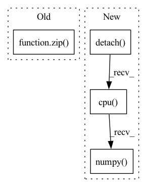

Pattern ID :12211
Before Change
// checks
print("check results")
for (theirs, ours) in zip( [their_out, their_next_h], [our_out, our_next_h]) :
theirs = theirs.detach().cpu().numpy()
ours = ours.detach().cpu().numpy()
if theirs.shape != ours.shape:After Change
// checks
print("check results")
theirs = their_out.detach().cpu().numpy()
ours = our_out.detach().cpu().numpy()
if theirs.shape != ours.shape:
raise AssertionError(f"Prediction shapes are not equal. "
f"Theirs: {theirs.shape}, ours: {ours.shape}")
// save_diff_hist(np.abs(theirs - ours), test_id)In pattern: SUPERPATTERN
Frequency: 3
Non-data size: 4
Instances Fragment ID: 41377631
Project Name: ais-bonn/vp-suite
Commit Name: a71498d763c84e72029c5921e390f8dff48fd61d
Time: 2022-02-11
Author: boltres@ais.uni-bonn.de
File Name: vp_suite/models/precipitation_nowcasting/_test_impl_match.py
M Class Name: AnonimousClass
N Class Name: AnonimousClass
M Method Name: compare_implementations(0)
N Method Name: compare_implementations(0)
M Parent Class:
N Parent Class:
M File Name: vp_suite/models/precipitation_nowcasting/_test_impl_match.py
N File Name: vp_suite/models/precipitation_nowcasting/_test_impl_match.py
M Start Line: 31
M End Line: 88
N Start Line: 31
N End Line: 89
Before Change
if torch.is_tensor(class_1):
return torch.cat((class_1, class_2), dim=1)
else:
return np.array(list(zip( class_1, class_2) )).reshape((-1, 2))
elif self._backend == "tensorflow":
return self._model.predict(input)After Change
if tensor_output:
return output
else:
return output.detach().cpu().numpy()
elif self._backend == "tensorflow":
return self._model.predict(input)
else: Fragment ID: 41377630
Project Name: indyfree/carla
Commit Name: 9b4d02120789794e885d4e47da522e1a1c17ed99
Time: 2021-05-27
Author: sbielawski@web.de
File Name: carla/models/catalog/catalog.py
M Class Name: MLModelCatalog
N Class Name: MLModelCatalog
M Method Name: predict_proba(2)
N Method Name: predict_proba(2)
M Parent Class: MLModel
N Parent Class: MLModel
M File Name: carla/models/catalog/catalog.py
N File Name: carla/models/catalog/catalog.py
M Start Line: 255
M End Line: 266
N Start Line: 235
N End Line: 258
Before Change
with torch.no_grad():
start = 0
if self.iteration > 0:
for P, V in zip( self.model.parameter_order, self.model.parameter_vector_len) :
start += V
self.current_Y = self.model.full_sample(self.current_state + h).view(-1)
if self.model.target.has_mask: // fixme something to do with the mask is a problemAfter Change
// self.L = self.L_history[-6:][np.argmax(np.abs(self.rho_history[-6:]))] * np.exp(np.random.normal(loc = 0, scale = 1))
h = self.update_h_v2()
if self.verbose > 1:
print("h: ", h.detach().cpu().numpy() )
with torch.no_grad():
self.current_Y = self.model.full_sample(self.current_state + h).view(-1) Fragment ID: 41377628
Project Name: connorstoneastro/autoprof
Commit Name: e7f256bf984d720d18daababa4852f2f7a2f4ac1
Time: 2022-12-13
Author: connorstone628@gmail.com
File Name: autoprof/fit/lm.py
M Class Name: LM
N Class Name: LM
M Method Name: step_method1(2)
N Method Name: step_method1(2)
M Parent Class: BaseOptimizer
N Parent Class: BaseOptimizer
M File Name: autoprof/fit/lm.py
N File Name: autoprof/fit/lm.py
M Start Line: 91
M End Line: 161
N Start Line: 89
N End Line: 162